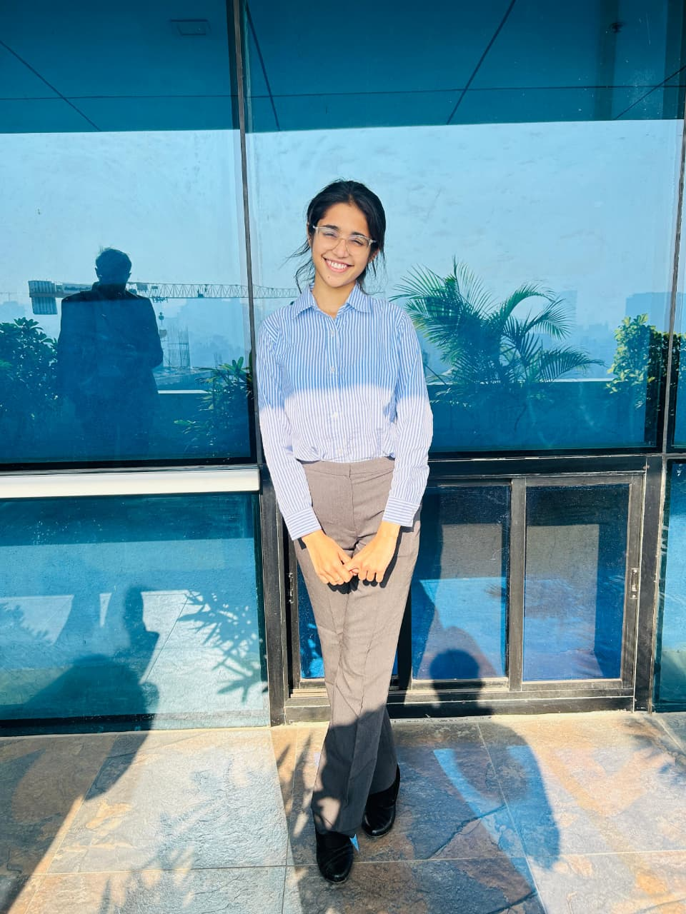

Mudra Recognition
EfficientNet-B0 model for single and double-hand mudra recognition on a custom annotated dataset of 51 classes. 99.7% test accuracy, deployed with FastAPI for real-time inference.
20212026
Shubhi Upadhyay

Hello everyone, I’m Shubhi Upadhyay, a Data Science and Business Analytics graduate from Sri Balaji University, Pune. I’m passionate about turning raw data into meaningful insights and building solutions that solve real-world problems. My skills include Python, machine learning, Power BI, and web application development. I’m eager to apply my analytical thinking, learn from industry professionals, and contribute to a team where I can create measurable business impact.
Passion Infotech · Apr 2025 – Jun 2025
IEEE ICSADL 2026
EfficientNet-B0 model for single and double-hand mudra recognition on a custom annotated dataset of 51 classes. 99.7% test accuracy, deployed with FastAPI for real-time inference.
2008 – 2025
Interactive Power BI dashboard with historical performance, player stats and KPI cards. Custom DAX measures kept data 99% consistent across 18 seasons.
Flask web app
Fetches live market parameters from financial APIs and applies automated rules to screen stocks. Data fetching, screening logic and presentation are kept in separate layers.
Sri Balaji University, Pune · Apr 2026
AI, Machine Learning, Computer Networks, Data Analysis, Business Intelligence, Data Visualization, SQL, Power BI, Excel, Python, EDA.
Kendriya Vidyalaya, RHE, Kirkee, Pune · 2023
Kendriya Vidyalaya, RHE, Kirkee, Pune · 2021
IEEE Proceedings of the 5th International Conference on Sentiment Analysis and Deep Learning (ICSADL 2026)
Read on IEEE Xplore